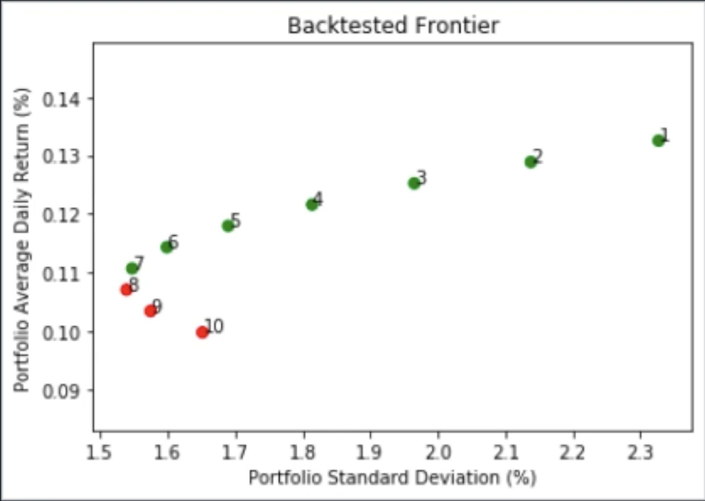
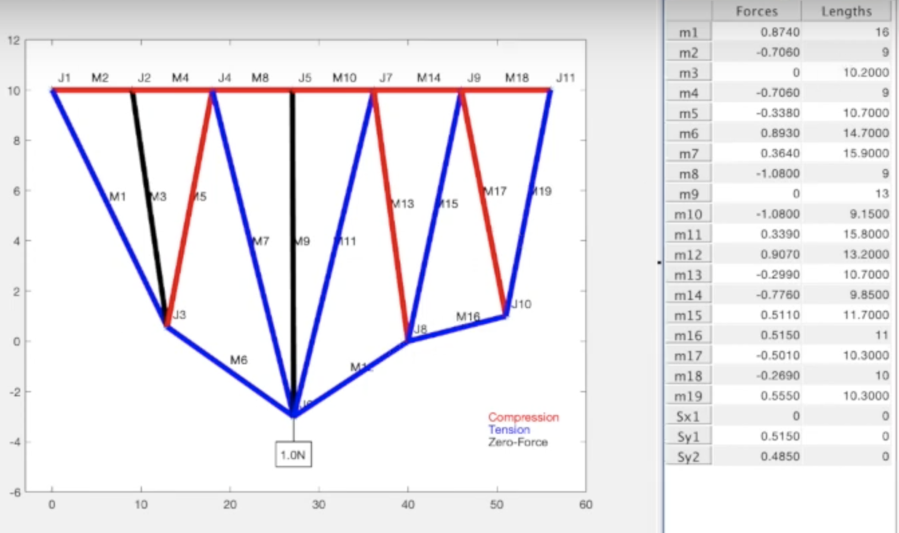
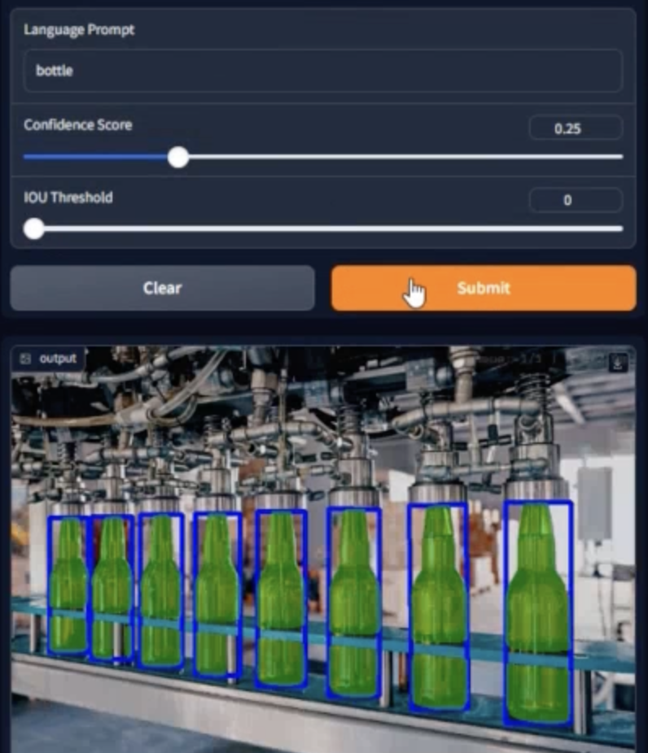
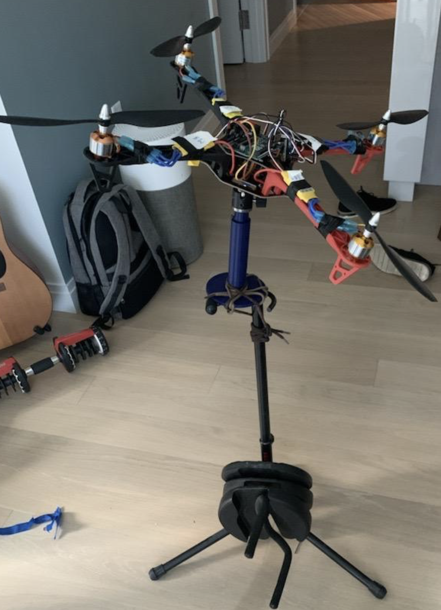
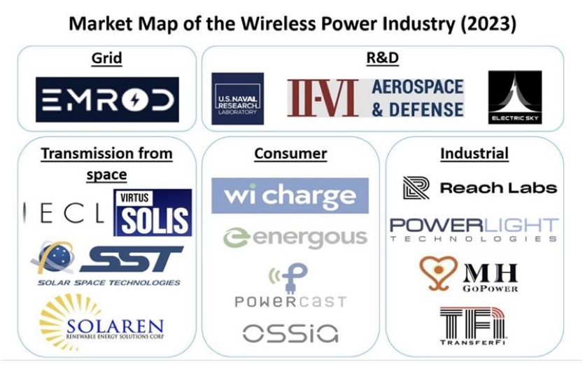
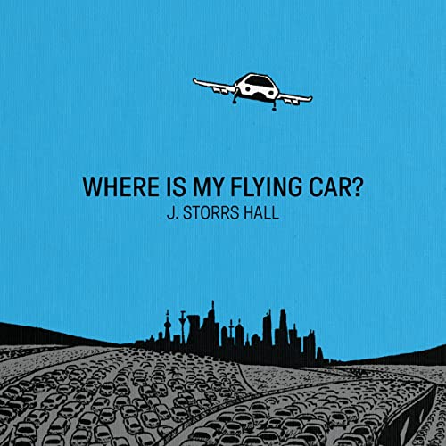

Featured Projects
Mobile Robot
Autonomous mobile robot platform for research and development in navigation and manipulation.
Mobile Robot

Portfolio Optimization Tool
Mean-variance portfolio optimizer with command-line interface for building efficient frontier using live market data.
Portfolio Optimizer

TrussDesigner — 2D Truss Analysis & Optimization
Interactive truss modeling toolkit with visual editing, structural analysis, and optimization to improve load-to-cost ratio.
Truss Designer
Supervised Learning Gym CarRacing
Behavioral cloning for autonomous racing with CNN policy network, expert demonstrations, and DAgger algorithm implementation.
Driving RL & Imitation Learning

Text-Based Pseudolabeling
Automated annotation system combining Grounding DINO and SAM to generate training data from text prompts.
Text-Based Pseudolabeling

Quadcopter PID Flight Controller & Digital Twin
Custom flight controller with PID stabilization, BNO055 IMU, and Gazebo digital twin visualization.
Quadcopter Controller
Featured Essays

Which Math Problems Have Closed-Form Solutions?
An exploration of why some mathematical problems admit elegant closed-form solutions while others don't.
Closed-Form Solutions

Simultaneous Wireless Information and Power Transfer
Research paper on wireless power transfer systems for IoT sensor networks and autonomous devices.
Wireless Power Transmission

"Where Is My Flying Car?" - Book Review
Critical analysis of J. Storrs Hall's examination of technological stagnation and innovation challenges.
Flying Car - Book Review
Experience


Teaching Assistant
Boston University EK125
Sept. 2020 - May 2021 • Boston, MA
- • Led weekly discussion sections and office hours on C, data structures, OOP, algorithms, and memory management
- • Debugged errors in student's code, and coordinated rubrics with faculty and teaching assistants to grade exams and quizzes
Software Developer Intern
WhiteOwl
July 2019 – Oct. 2019 • Boca Raton, FL
- • Developed a web application to automate background check audits using Python and SQL Server.
- • Collected data from hand-written documents using optical-character-recognition libraries in Python, then made accessible through data filters in the user interfaces.
- • Designed marketing emails using embedded HTML and CSS, ensured compatibility with widely-used email clients.
Congressional Intern
Office of Congressman Ted Deutsch
June - Aug. 2017 • Boca Raton, FL
- • Answered constituent phone calls and documented inquiries, concerns, and feedback for congressional staff.
- • Coordinated meeting schedules and assisted with daily office operations.
Lifeguard & Swim Instructor
Eagles Landing Summer Camp
2012 - 2016 • Coconut Creek, FL
- • Provided individual swim lessons to children aged 4-12 and communicated progress to parents.
- • Collaborated with camp staff to coordinate and supervise activities, ensuring safety and a positive environment.